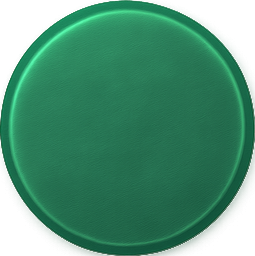
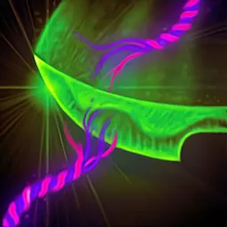

Maîtrise des lames de guerre
 Passif
Passif
Le Mage guerrier apprend à créer et à manier une lame de guerre. Combinez un bâton et une épée courte ; la lame de guerre conserve les propriétés des deux, mais elle devient une arme à deux mains. Lorsqu'il attaque avec une lame de guerre, vous pouvez choisir entre des dégâts perforants ou contondants, mais le dé de précision est choisi parmi les deux composants lors de la création de l'arme.
Soins de guerre
2 PA (Action)
En tant qu'action, dépensez un emplacement de sort de niveau 1 pour soigner une cible une fois lors du tour du Mage guerrier, et de nouveau à la fin du round, pour 1d6 + modificateur de Sagesse points de vie. Le Mage guerrier doit toucher la cible. Le soin augmente à 3d6 + modificateur de Sagesse avec un emplacement de sort de niveau 2 et 6d6 + modificateur de Sagesse avec un emplacement de sort de niveau 3. S'il est effectué en dehors du combat, la cible restaure simultanément les deux instances de soin.
Maladie aléatoire
2 PA (Action)
En tant qu'action, dépensez un emplacement de sort de niveau 1 et lancez 1d6, puis ciblez une créature dans un rayon de 18 mètres. Cette créature doit réussir un jet de sauvegarde de Sagesse ou être affectée par une affliction pendant 3 rounds en fonction du résultat du 1d6.
1 : Aveuglé 2 : Charmé 3 : Maudit 4 : Empoisonné pour 1d8 par round de poison. Augmente à 2d8 au niveau 5, 3d8 au niveau 10, 4d8 au niveau 14 et 5d8 au niveau 19. 5 : Assourdi 6 : Paralysé
Barrière
 1 PA (Réaction)
1 PA (Réaction)
Un bouclier protecteur d'énergie radieuse repousse les tentatives d’infliger des afflictions aux alliés. Lorsqu'un ennemi force au moins un allié à effectuer un jet de sauvegarde contre une affliction, le Mage guerrier peut utiliser sa réaction pour accorder +4 à tous les jets de sauvegarde des alliés contre cet effet.
Tranche-force
 1 PA (Action Combo)
1 PA (Action Combo)
Lorsque le Mage guerrier frappe un ennemi souffrant d'une affliction avec une attaque, le Mage guerrier peut utiliser une action combo pour réduire l'Offense de cet ennemi de son modificateur de Sagesse pendant 3 rounds, et le Mage guerrier lance 1d6 supplémentaire lors du calcul des dégâts de cette attaque.
Conclave des magiciens
 Spécialisation
Spécialisation
Les Mages guerriers se regroupent parfois pour partager des informations et des techniques secrètes. Choisissez un Conclave, et le Mage guerrier acquerra des aptitudes supplémentaires de ce Conclave au fur et à mesure de son niveau.
Force de la nature
2 PA (Action)
Le Mage guerrier peut effectuer deux attaques dans la même action avec sa lame de guerre, la première infligeant des dégâts tranchants et la seconde des dégâts contondants.
Langue de la nature
Passif
Les capacités chamaniques du Mage guerrier lui permettent de parler et de comprendre les créatures du Labyrinthe. Le mage guerrier peut comprendre la langue des créatures non-humanoïdes, si elles en ont une.
Épidémie
1 PA (Action Combo)
Après avoir touché une cible souffrant d'une affliction avec une attaque, le Mage guerrier peut dépenser un emplacement de sort de niveau 1 pour forcer un nombre quelconque de créatures choisies dans un rayon de 6 mètres à effectuer un jet de sauvegarde de Sagesse ou à être affligées par cette affliction pendant 3 rounds.
 Vitesse de l’élan
2 PA (Action)
Vitesse de l’élan
2 PA (Action)
En tant qu'action, dépensez un emplacement de sort de niveau 1 pour cibler un certain nombre de créatures dans un rayon de 30 mètres, jusqu'au modificateur de Sagesse du Mage guerrier. Ces créatures gagnent 1 PA bonus au début de leur tour pendant 1 round qu'elles ne peuvent utiliser que pour foncer ou se désengager, mais ce PA disparaît à la fin de leur tour si elles ne l'utilisent pas. Elles peuvent temporairement dépasser le plafond de 4 PA avec Vitesse de l’élan.
Effacement
 1 PA (Action Bonus)
1 PA (Action Bonus)
En tant qu'action bonus, supprimez tous les bonus ou malus sur une créature dans un rayon de 15 mètres. Le Mage guerrier récupère un emplacement de sort de niveau 2 ou moins par bonus ou malus purgé. Le Mage guerrier ne peut récupérer que jusqu'à 2 emplacements de sorts de cette manière par repos long.
Soins de guerre en ligne
2 PA (Action)
En tant qu'action, le Mage guerrier peut dépenser un emplacement de sort de niveau 2 pour cibler jusqu'à 3 créatures amicales dans un rayon de 30 mètres et les soigner pour 1d8 + modificateur de Sagesse points de vie une fois lors du tour du Mage guerrier, et de nouveau à la fin du round. Le soin augmente à 2d8 + modificateur de Sagesse avec un emplacement de sort de niveau trois. S'il est effectué en dehors du combat, la cible restaure simultanément les deux instances de soin.
Transfert
2 PA (Action)
En tant qu'action, dépensez un emplacement de sort de niveau 2 pour supprimer une seule affliction d'une créature amicale volontaire dans un rayon de 36 mètres. Une créature ciblée dans un rayon de 36 mètres doit ensuite réussir un jet de sauvegarde de Dextérité avec désavantage ou subir cette affliction pendant 3 rounds.

Tranche-membre
1 PA (Action Combo)
Chaque fois que le Mage guerrier frappe un ennemi souffrant d'une affliction avec une attaque, le Mage guerrier peut dépenser un emplacement de sort de niveau 2 et une action combo pour choisir un lien. Cet ennemi doit réussir un jet de sauvegarde de Dextérité ou subir le lien choisi pendant 3 rounds.
Arme biomagique
1 PA (Action Bonus)
L'expérimentation avec différentes concentrations d'énergie magique permet au Mage guerrier de contrôler quelle maladie inflige la Maladie aléatoire. En utilisant une action bonus, le Mage guerrier peut choisir quelle maladie inflige la Maladie aléatoire jusqu'à la fin de son prochain tour.
Vampire
Passif
Lorsque le Mage guerrier frappe un ennemi souffrant d'une affliction avec une attaque, le Mage guerrier restaure 1d8 + modificateur de Sagesse points de vie.
Vidange mentale
Passif
Lorsque le Mage guerrier frappe un ennemi à la fois lié et souffrant d'une autre affliction avec une attaque, il restaure un emplacement de sort de n'importe quel niveau. Il peut, à la place, accorder à un allié un emplacement de sort de l'un de ces niveaux, ou restaurer une utilisation d'une capacité de niveau 19 ou inférieure limitée par les repos longs ou courts. La Vidange mentale ne peut restaurer les emplacements de sorts ou les utilisations de fonction que 3 fois par repos long.
Robe de fée
2 PA (Action)
En tant qu'action, restaurez 6d10 + modificateur de Sagesse points de vie à toutes les créatures amicales volontaires dans un rayon de 36 mètres. Ces créatures se remettent de toutes les afflictions qui les affectent et ne peuvent être affligées par des afflictions jusqu'à la fin du prochain tour du Mage guerrier. La Robe de fée peut être utilisée une fois par repos long.
 Détails de la classe
Détails de la classe
 Points de vie : 1d8 + modificateur de Constitution par niveau de Mage guerrier
Points de vie : 1d8 + modificateur de Constitution par niveau de Mage guerrier Dés de vie : 1d8 par niveau de Mage guerrier
Dés de vie : 1d8 par niveau de Mage guerrier DD des jets de sauvegarde : 8 + bonus de maîtrise + modificateur de Sagesse
DD des jets de sauvegarde : 8 + bonus de maîtrise + modificateur de Sagesse Maîtrises : Lames de guerre, Épées, Bâtons ; Armures légères, Armures moyennes ; Kit d'herboristerie
Maîtrises : Lames de guerre, Épées, Bâtons ; Armures légères, Armures moyennes ; Kit d'herboristerie Jets de sauvegarde : Intelligence, Charisme
Jets de sauvegarde : Intelligence, Charisme Compétences : Choisissez 3 parmi Dressage, Arcanes, Religion, Histoire, Investigation, Intuition, Médecine, Nature, Discrétion et Perception
Compétences : Choisissez 3 parmi Dressage, Arcanes, Religion, Histoire, Investigation, Intuition, Médecine, Nature, Discrétion et Perception Équipement de départ : Un bâton, une épée, une armure moyenne, un kit d'herboristerie, un journal détaillant des notes médicales avec de la place pour des ajouts et un stylo, un sac d'explorateur
Équipement de départ : Un bâton, une épée, une armure moyenne, un kit d'herboristerie, un journal détaillant des notes médicales avec de la place pour des ajouts et un stylo, un sac d'explorateur